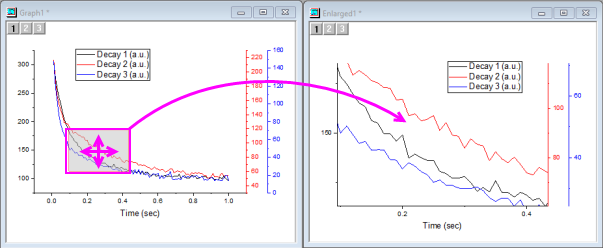
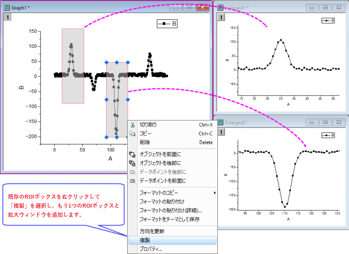
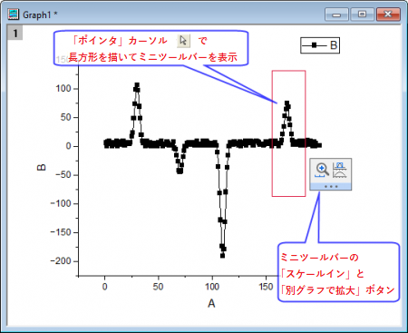

グラフの一部を拡大する
Zoom-Portion-of-Graph
Originには様々なグラフ拡大/縮小及びパンニングのツールがあります。2つの方法で、2Dグラフの一部を拡大し、それをセカンダリグラフに送ります：
- Originのズームグラフでは、インタラクティブ2パネルのグラフが作成され、移動可能かつサイズ変更可能なROIがプライマリパネルに表示され、セカンダリパネルに拡大表示されます。
- 軸スケールの拡大ボタン
 を使用して2Dグラフの拡大部分を新しいウィンドウにコピーできます。複数のレイヤが重なっており、かつ軸を共有している リンクされたレイヤのグラフの場合にも、この機能は有効です（作図の詳細-レイヤ属性：レイヤの大きさタブにてリンクされたレイヤの%が左/上は0に、幅/高さは100に、さらに親レイヤ座標軸へのリンクは直接(1対1)となっていること）。
を使用して2Dグラフの拡大部分を新しいウィンドウにコピーできます。複数のレイヤが重なっており、かつ軸を共有している リンクされたレイヤのグラフの場合にも、この機能は有効です（作図の詳細-レイヤ属性：レイヤの大きさタブにてリンクされたレイヤの%が左/上は0に、幅/高さは100に、さらに親レイヤ座標軸へのリンクは直接(1対1)となっていること）。
- グラフをアクティブにして、Ctrlキーを押して軸スケールの拡大ボタン（プロット操作・オブジェクト作成ツールバー）をクリックし、2Dグラフ上の矩形（ROI）をドラッグします。
- この拡大グラフはダイナミックなものです。元のグラフの矩形を移動、サイズ変更すると拡大グラフも更新されます。
- 元のグラフから矩形を削除して同時に拡大グラフウィンドウを削除するには、矩形を選択してDeleteキーを押します。
- 
- Note: グラフ上に複数のROIボックスを追加することができます。すると、これらのROI領域をズームするために複数の拡大グラフウィンドウが表示されます。
- 
- ミニツールバーのボタンを使用して、領域をズームインします。
- 
追加の情報